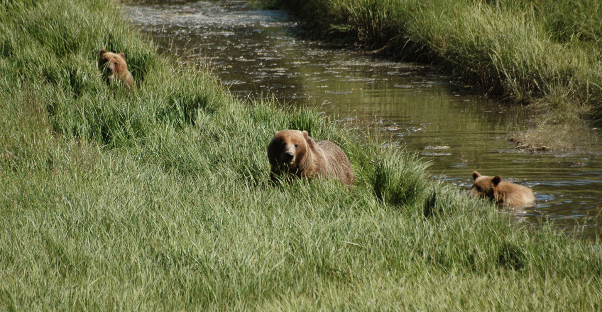
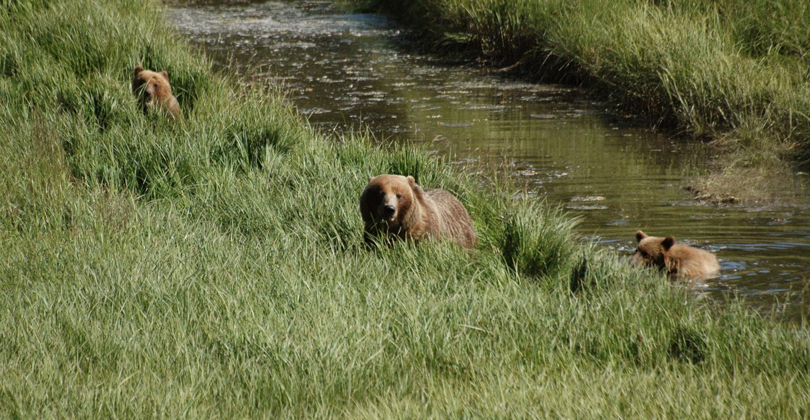
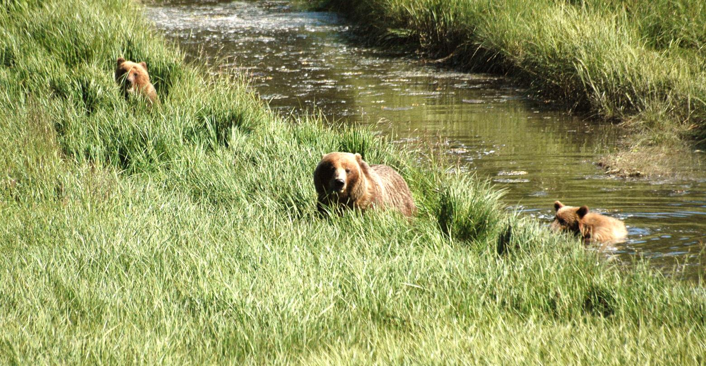
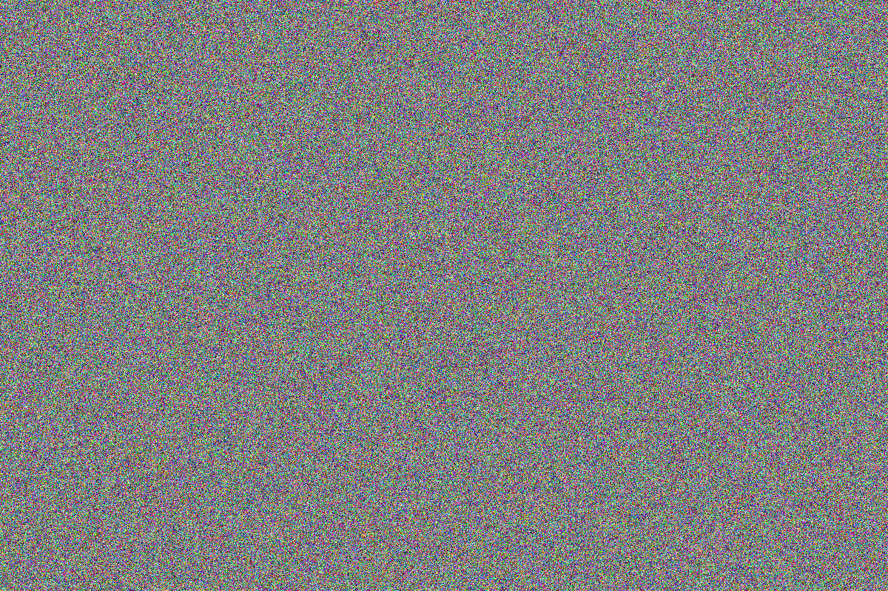

Pillow: Working with Images
The Pillow package is a fork of the older PIL library, which stood for Python Imaging Library. This package allows you to load and work with existing images, and it also allows you to create new images and fill the pixels programmatically. This makes it possible to make your own photo filters, build your own image adjustment tools, and explore digitally-generated art.
- Installing Pillow
- Loading an Image
- Exploring Pixel Data
- Making an Exact Copy
- Brightening the Image
- Starting From a Blank Image
- Final Words
Installing Pillow
You can install Pillow on any OS using pip. (Pip is covered in the project chapters, if you haven’t gotten that far yet.)
Run this command in a terminal window:
$ python -m pip install --user pillow
You may need to use the command python3 instead of python, or whichever command you use to start a Python terminal session on your system.
Loading an Image
You can open an existing image in just a few lines of code. Here we’ll open an image, and get some helpful information about the image.
To run this code, make a folder somewhere on your system called photo_work, or something like that. In that folder, make two more folders called original_images and modified_images. It’s a really good idea to use a copy of an image, so you don’t accidentally modify or destroy an image you might care about. It’s also good to keep your original images separate from your modified images, so you are always starting with the same image when you run your code.
Enter this code, with a filename that matches your image. If you want to use the same image I’m using here, you can find it in the beyond_pcc folder when you download the resources for the book.
from PIL import Image
filename = 'starr_bears.jpg'
filepath = f"original_images/{filename}"
# Load the original image, and get its size and color mode.
orig_image = Image.open(filepath)
width, height = orig_image.size
mode = orig_image.mode
# Show information about the original image.
print(f"Original image: {filename}")
print(f"Size: {width} x {height} pixels")
print(f"Mode: {mode}")
# Show the image.
orig_image.show()
We import the Image class from the PIL library, which was installed as part of Pillow. We specify the filename and filepath of the original image, so we can use a different path for the modified image later. We then call the Image.open() function. Once the image is open, we can get some information about the image; here we pull its width and height, and the color mode of the image. Then we display this image.
Here’s the text output:
Original image: starr_bears.jpg
Size: 1560 x 811 pixels
Mode: RGB
The last line uses your system’s image viewer to display the image. You can see from the filename in the viewer (tmpt8sb9_sb.PNG in my case), that Pillow creates a temporary file to display the current image.
So far, we haven’t done anything to modify the image:

Exploring Pixel Data
Examining the First Pixel
Before working with many pixels, let’s just look at one single pixel. The following code loads all the pixels in the image, and then prints the pixel data for the very first pixel in the image:
from PIL import Image
filename = 'starr_bears.jpg'
filepath = f"original_images/{filename}"
# Load the original image, and get its size and color mode.
orig_image = Image.open(filepath)
width, height = orig_image.size
mode = orig_image.mode
# Show information about the original image.
print(f"Original image: {filename}")
print(f"Size: {width} x {height} pixels")
print(f"Mode: {mode}")
# Load all pixels from the image.
orig_pixel_map = orig_image.load()
# Look at the pixel in the top left corner.
first_pixel = orig_pixel_map[0, 0]
print(f"\nFirst pixel: {first_pixel}")
The load() method loads all the pixels into a custom Pillow data structure that allows us to work with all of the pixels using x, y coordinates. The pixel at (0, 0) is in the upper left corner of the image. To specify an individual pixel, you use square brackets containing the x and y values of the pixel you want to examine. Here’s the output:
Original image: starr_bears.jpg
Size: 1560 x 811 pixels
Mode: RGB
First pixel: (31, 52, 21)
Each pixel is represented as a tuple with three elements, corresponding to the RGB components of the pixel’s color. We can see that this pixel has a red component of 31, a green component of 52, and a blue component of 21. You can plug these values into an online color tool and see what color this pixel is if you’re curious:
Examining Multiple Pixels
You’ll usually want to work with more than one pixel. Often, this is done with a set of nested loops, iterating over the columns and rows of an image. The following code loops over all the pixels in the top left 10px by 10px region of the image:
from PIL import Image
filename = 'starr_bears.jpg'
filepath = f"original_images/{filename}"
# Load the original image, and get its size and color mode.
orig_image = Image.open(filepath)
width, height = orig_image.size
mode = orig_image.mode
# Show information about the original image.
print(f"Original image: {filename}")
print(f"Size: {width} x {height} pixels")
print(f"Mode: {mode}")
# Load all pixels from the image.
orig_pixel_map = orig_image.load()
# Examine the 100 pixels in the top left corner of the image.
print("\nPixel data:")
for x in range(10):
for y in range(10):
pixel = orig_pixel_map[x, y]
print(pixel)
To see some pixels, we loop over the first 10 x values and the first 10 y values. This means we’ll first examine the pixel at (0, 0), then the pixel at (0, 1), then the pixel at (0, 2). This is the beginning of the first row or pixels. When we reach (0, 9), the x value will increase by 1 and the y value will start back at 0. We’ll then start on the second row: (1, 0), then (1, 1), followed by (1, 2). Here’s the first few lines of the output:
Original image: starr_bears.jpg
Size: 1560 x 811 pixels
Mode: RGB
Pixel data:
(31, 52, 21)
(33, 53, 18)
(46, 64, 26)
(60, 77, 35)
--snip--
The pixels are getting brighter as we move from a region of shadow into a grassy region.
Seeing All the Pixels
To see all the pixels, we need to loop over the entire image. To do this, we only need to change the boundaries of the loop at the end of the previous program. Here’s the modified loop:
--snip--
# Examine all pixels in the image.
print("\nPixel data:")
for x in range(width):
for y in range(height):
pixel = orig_pixel_map[x, y]
print(pixel)
We loop over all x values in the width of the image, and then loop over all y values in the height of the image. The output looks exactly the same as the previous example, except it goes on and on.
There are 1560 * 811 = 1,265,160 pixels in this image. Printing is one of the slowest operations you can do, so you may want to press Ctrl-C to stop your output instead of waiting for all of the pixels to scroll by.
Making an Exact Copy
Before modifying the image, let’s make sure we can simply copy the image. Then we can be confident that our code for modifying the original image will be based on an accurate reproduction of the original image.
Generating a New Image
The following code generates a new image, with the same color mode and size as the original image:
from PIL import Image
filename = 'starr_bears.jpg'
filepath = f"original_images/{filename}"
# Load the original image, and get its size and color mode.
orig_image = Image.open(filepath)
width, height = orig_image.size
mode = orig_image.mode
# Show information about the original image.
print(f"Original image: {filename}")
print(f"Size: {width} x {height} pixels")
print(f"Mode: {mode}")
# Load all pixels from the image.
orig_pixel_map = orig_image.load()
# Create a new image matching the original image's color mode, and size.
# Load all the pixels from this new image as well.
new_image = Image.new(mode, (width, height))
new_image.show()
The Image.new() function creates a new image. It requires a color mode, which we set to match the original image’s mode. It also requires a size, specified as a tuple with a width and height. We pass in the dimensions of our original image. If you don’t specify a base color, the new image starts out with all black pixels:
Copying all Pixels to the New Image
Now let’s copy all the pixel data from the original image to the new image:
from PIL import Image
filename = 'starr_bears.jpg'
filepath = f"original_images/{filename}"
# Load the original image, and get its size and color mode.
orig_image = Image.open(filepath)
width, height = orig_image.size
mode = orig_image.mode
# Show information about the original image.
print(f"Original image: {filename}")
print(f"Size: {width} x {height} pixels")
print(f"Mode: {mode}")
# Load all pixels from the image.
orig_pixel_map = orig_image.load()
# Create a new image matching the original image's color mode, and size.
# Load all the pixels from this new image as well.
new_image = Image.new(mode, (width, height))
new_pixel_map = new_image.load()
# Modify each pixel in the new image.
for x in range(width):
for y in range(height):
# Copy the original pixel to the new pixel map.
new_pixel_map[x, y] = orig_pixel_map[x, y]
new_image.show()
When I run this code, an image with the filename tmpdmq72fv3.PNG pops up, but it looks exactly like the original image:

Saving the New Image
If you want to save the new image after viewing it, you can call the save()method with a filename or file path. Here’s the code to do that:
--snip--
new_image.show()
new_filename = f"modified_{filename}"
new_filepath = f"modified_images/{new_filename}"
new_image.save(new_filepath)
This code adds the prefix modified_ to the original filename, and saves it in the folder modified_images so it’s in a different place than the original image. This approach avoids accidentally writing over your original images.
This operation can be slow, as Pillow has to write each individual pixel to disk. On my system, for an image this size, it took about 20 seconds. You might want to avoid calling save() until you know your code does what you want it to.
Copying Individual RGB Values
If you’re trying to build a photo filter or do other image manipulation work, you probably want to work with the individual RGB components of each pixel. The following code pulls the RGB component values of each pixel, and copies over these individual values to each pixel in the new image.
Most of the program is unchanged, so here’s the loop that’s used to create the new image:
--snip--
# Modify each pixel in the new image.
for x in range(width):
for y in range(height):
# Grab the current pixel, and the component RGB values.
orig_pixel = orig_pixel_map[x, y]
orig_r = orig_pixel[0]
orig_g = orig_pixel[1]
orig_b = orig_pixel[2]
# Copy this data over to the corresponding pixel in the new image.
new_r = orig_r
new_g = orig_g
new_b = orig_b
new_pixel = (new_r, new_g, new_b)
new_pixel_map[x, y] = new_pixel
new_image.show()
We first pull the original pixel, and assign it to orig_pixel. We then assign the first element of the pixel’s tuple to orig_r, the second to orig_g, and the third to orig_b. Now we have easy access to each color component of every pixel in the original image!
We create three new variables: new_r, new_g, and new_b. We use these to create a new pixel, which is a tuple containing the three RGB component values that we want for this pixel. Then we assign this new pixel to the appropriate point in new_pixel_map.
The result is an exact copy of the original image, just as we made previously. However, this approach gives us a lot of flexibility in how we might want to modify the image. You can use any rule you want for setting the values of new_r, new_g, and new_b. You can bump the original values up, you can decrease them, you can change only some of them. If you set them all to the same value according to some rule, you’ll end up with a black and white image.
Brightening the Image
Let’s make one modification to the image. We’ll brighten the image, which corresponds to increasing all of the component values for each pixel.
Again, most of the code doesn’t change. Here’s the loop that brightens the image:
--snip--
# Brighten each pixel in the new image.
brightness_factor = 1.4
for x in range(width):
for y in range(height):
# Grab the current pixel, and the component RGB values.
orig_pixel = orig_pixel_map[x, y]
orig_r = orig_pixel[0]
orig_g = orig_pixel[1]
orig_b = orig_pixel[2]
# Copy this data over to the corresponding pixel in the new image.
new_r = int(orig_r * brightness_factor)
new_g = int(orig_g * brightness_factor)
new_b = int(orig_b * brightness_factor)
new_pixel = (new_r, new_g, new_b)
new_pixel_map[x, y] = new_pixel
new_image.show()
We set a brightness factor, which we’ll multiply every RGB component value by. If this is equal to 1, we’ll get an exact copy of the image. If it’s greater than 1 we’ll get a brighter image, and if it’s less than 1 we’ll get a darker image. The value 1.4 is probably higher than what you’d want for artistic purposes, but we want it to be really clear that the new image is brighter than the original.
Component values in this color model need to be integers, so we wrap the int() function around the multiplication operation for each pixel. The result is a brighter image, which you can see by looking at the original next to the brightened image:

If you want to have a little fun with this, try swapping the red and green values, or switching all three values. You should still see the bears, but they should look quite different!
Starting From a Blank Image
If you want, you can start with a blank image and specify the pixels according to any algorithm you choose.
Here’s the code to create a new, blank image:
from PIL import Image
# Set a size and mode, and create a new image.
width, height = (1200, 800)
mode = 'RGB'
my_image = Image.new(mode, (width, height))
my_image.show()
We set a size for our new image, and set the mode to 'RGB'. Then we call Image.new(), just like you saw earlier.
We get an image that’s all black, with the dimensions we specified:
To demonstrate a simple way to work with a blank canvas, we’ll set every pixel’s component value randomly:
from random import randint
from PIL import Image
# Set a size and mode, and create a new image.
width, height = (1200, 800)
mode = 'RGB'
my_image = Image.new(mode, (width, height))
# Load all the pixels.
my_pixels = my_image.load()
# Loop through all the pixels, and set each color randomly.
for x in range(width):
for y in range(height):
r = randint(0, 255)
g = randint(0, 255)
b = randint(0, 255)
pixel = (r, g, b)
my_pixels[x, y] = pixel
my_image.show()
We import the randint() function from the random module, which returns a random integer between the bounds you provide. We then load the pixels as you saw earlier, so we can work with each pixel individually. This time we’re not reading any pixels in the loop, since we’re not basing our new pixels off of an existing image. In the loop we choose a random value between 0 and 255 for each of the RGB components, and we build a pixel from these values. Then we set the current pixel.
The result is an image where every color is completely random:

If you look at this image in a file browser, you’ll notice that it takes up much more memory than other images of comparable dimensions. For example the blank black image takes about 19 KB of memory, while the random color image takes up almost 3 MB of memory. That’s because a truly random image cannot be compressed at all. There are no similar regions to compress, so the details of every single pixel must be stored individually.
Final Words
This just touches on what you can with an image processing library. The book has not shown a number of things that are possible, because it’s so much more fun to try it yourself than to read about it here. For example, you can build your own photo filters and run them on your own images. You can generate images containing all possible colors. You can do more complex analysis, like finding edges and sharpening images. You can even write code that identifies, say, all the ice worms in an image.
This work is the basis of how apps like Instagram and tools like Photoshop are built. Enjoy your explorations, and if you make something interesting please share it! The author is @ehmatthes on Twitter @ehmatthes, and you can also email him at 📧
@ehmatthes, and you can also email him at 📧  .
.